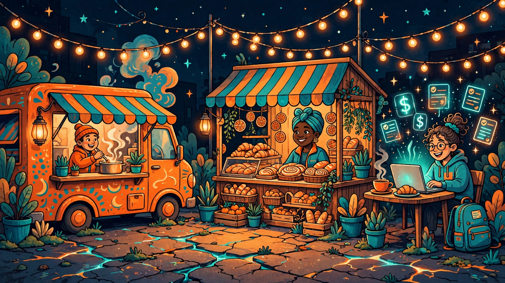

by Honed Signal
Clear tools for the money decisions that show up in real life and in your work.
Everyday money
Tools for everyday money: budgets, debt, taxes, and life's big decisions.

Independent work
Tools for freelancers and small businesses: rates, margins, and self-employment tax.